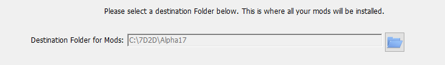
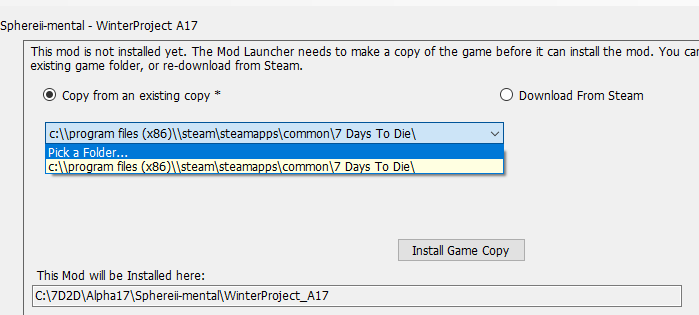

Troubleshooting
Troubleshooting:
Having trouble? The OneClick installer can be a bit tricky at times.
Won't Update / Error on Start up:
- Open up your Start menu, and go to Add / Remove Programs
- Search for 7D2D Launcher, and Uninstall
- Re-install from https://7d2dmodlauncher.github.io/Installer/publish/
Can't see any Mod Listings:
- Click on Disable SSL, and restart the Mod Launcher
- Go to File -> Clear -> Clear Mod History
Black Screen on Game Launch
- Check the Disable EAC, and re-try. This is often due to running EAC with mods that have modified some libraries.
I've Lost my mods!
- By default, the mods install in C:\7D2D. This can be customized by the user, but sometimes the mod launcher will forget. Click on any top level mods, and look for "Destination Folder for mods".
- Click on the Blue Folder, and re-select where your mods are installed.

I keep getting an error that it can't see Steam running, but it is!
- This is often due to user permissions. The Launcher and Steam is running as different users, with Steam running as an Admin.
- In steam, click on ADD A GAME at the bottom
- Select Browse
- Select the 7D2D Launcher, available on the Desktop as a shortcut.
- You may also try clicking on Run Game As Admin.
How do I enable the Steam Overlay when playing Modded games?
- Adding the 7D2D Launcher as a non-Steam game will provide you with the overlay.
- In steam, click on ADD A GAME at the bottom
- Select Browse
- Select the 7D2D Launcher, available on the Desktop as a shortcut.
The Install Game Copy is grayed out and won't let me install!
- This can happen if your Copy from an existing copy is not set correctly. Select your steam folder from the drop down.

Created with the Personal Edition of HelpNDoc: Full-featured Help generator